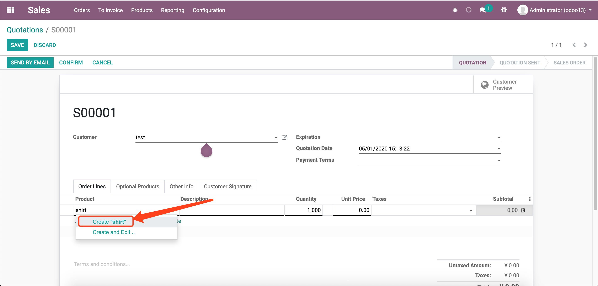
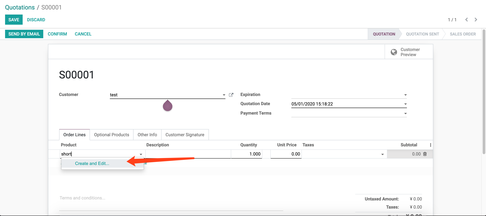

Forbid the quick create in Relational field
屏蔽关联字段的快速创建
sometimes this is very upset to relational field that quick create object accidentally because of the quick create function
有时因为快速创建的功能，我们一不小心就创建了一个记录，这样很让人烦恼！

this module will forbid the qucik function when installed it !
当安装了这个模块，它会屏蔽快速创建的功能！
